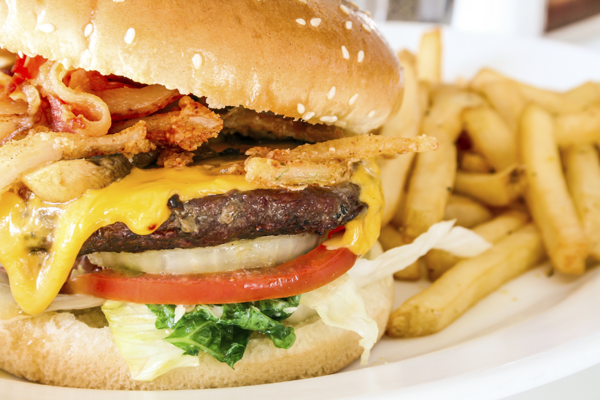
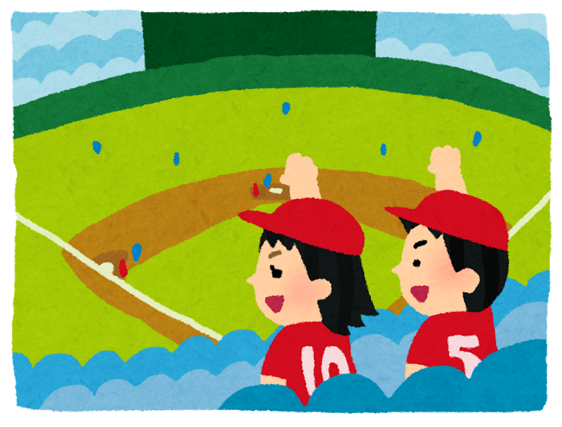
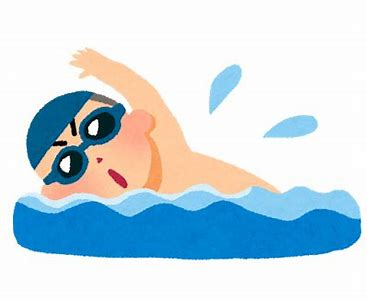

私の趣味は映画鑑賞とランニングです。好きな映画は洋風のものが多くパイレーツ・オブ・カリビアンが一押しです。ランニングは高校から初めていまでは
一日の中で唯一の運動として続けています。
この世で一番おいしい食べ物はハンバーガーです。私の好きな食物はジャンクフードで、その中でもハンバーガーが好きです。体には悪いですが、病みつき
になるようなあの濃い味は毎日食べても飽きません。

私が好きなスポーツは野球と水泳です。見るだけなら野球、自分でやるなら、水泳の方が好きです。

